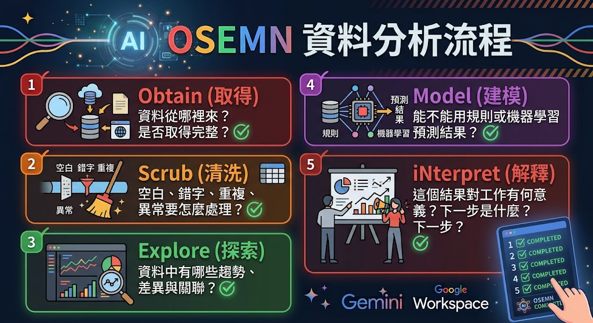

AI資料分析術：從資料清洗、流失預測到互動儀表板¶
各位今天不是來背統計公式，也不是要在一堂課內變成資料科學家。我們要學的是一套能在工作上立即使用的分析流程：拿到資料後，先確認資料代表什麼，再清理錯誤、觀察規律、建立預測，最後把結果講成主管聽得懂、同事做得到的建議。
AI 可以幫我們加速，但它不是「按一下就永遠正確」的魔法。資料如果錯，AI 只會更快地產生錯誤結論。今天最重要的一句話就是：先驗證資料，再相信圖表；先理解問題，再要求模型。
- 公司有一萬筆會員資料時，你會從哪裡開始看？
- 空白欄位應該刪掉、填 0，還是保留？三種做法會有何差異？
- 「年長客戶流失率較高」能不能直接推論「年齡造成流失」？
- 主管真正想聽的是演算法名稱，還是下一步該做什麼？
先懂 OSEMN，不要一拿到資料就畫圖¶
OSEMN 是一套資料分析流程，可記成：
- Obtain（取得）：資料從哪裡來？是否取得完整？
- Scrub（清洗）：空白、錯字、重複、異常要怎麼處理？
- Explore（探索）：資料中有哪些趨勢、差異與關聯？
- Model（建模）：能不能用規則或機器學習預測結果？
- iNterpret（解釋）：這個結果對工作有何意義？下一步是什麼？
以高中程度比喻：
- Obtain：收齊報名表。
- Scrub：補齊姓名、移除重複報名、修正錯誤電話。
- Explore：看看大家偏好哪個地點、哪個年級參加最多。
- Model：預估需要幾台遊覽車、哪些人可能臨時取消。
- iNterpret：把結果整理成老師能決策的行程與預算。

原教材工具對照¶
| 階段 | 核心任務 | 傳統工具例 |
|---|---|---|
| Obtain | 蒐集、抓取資料 | SQL、Python Requests、Scrapy |
| Scrub | 清洗、預處理 | Pandas、OpenRefine |
| Explore | 尋找模式、視覺化 | Matplotlib、Seaborn、Tableau |
| Model | 機器學習、預測 | scikit-learn、TensorFlow、PyTorch |
| iNterpret | 洞察、敘事、決策呈現 | PowerPoint、Dashboard |
生成式 AI 能協助每一步，但不會替你承擔資料正確性與決策責任。
示範提示詞 1：說明流程¶
2. CRM 案例：先認識每一欄在說什麼¶
原教材使用 crm.csv 作為客戶管理資料。欄位如下：
| 欄位 | 中文名稱 | 意義／計算 |
|---|---|---|
CustomerID |
客戶編號 | 每位客戶的唯一識別碼 |
Age |
年齡 | 客戶年齡 |
Gender |
性別 | 可能同時出現 Male、Female、M、F |
JoinDate |
加入日期 | 註冊或成為會員日期 |
LastPurchaseDate |
最後購買日期 | 最近一次完成交易的日期 |
TotalOrders |
總訂單數 | 加入以來累計購買次數 |
TotalSpent |
總消費金額 | 累計消費金額 |
Churn |
流失狀態 | 0 代表仍活躍；1 代表已流失 |
AvgOrderValue |
平均訂單價值 | TotalSpent / TotalOrders |
DaysSinceLastPurchase |
距上次購買天數 | 數值越大，通常越久未回購 |
示範提示詞 2：欄位解讀與分析方向¶
我會上傳一份 CRM CSV。請先不要建立模型。
請依序完成：
1. 列出每個欄位的資料型態、商業意義、合法範圍與可能問題。
2. 指出哪些欄位是識別碼、特徵、目標欄位或衍生欄位。
3. 提出至少 8 個可回答的商業問題。
4. 列出分析前需要向資料擁有者確認的事項。
5. 將推測與資料中可直接確認的事實分開標示。
課堂提問¶
CustomerID可以直接拿來預測流失嗎？為什麼？DaysSinceLastPurchase為何可能比Age更有行動價值？Churn是由誰、用什麼規則定義？若定義不清會發生什麼事？
參考答案¶
- CustomerID 通常只是識別碼，不代表客戶行為；直接放入模型可能學到無意義規律。
- 距上次購買天數可直接連結召回活動；年齡通常不能被企業改變。
- 流失定義會影響全部標籤，例如 30 天未購買與 180 天未購買是完全不同的問題。
8-2 各種資料分析與視覺化，都請 AI 協助做¶
1. Scrub：資料清洗與 GIGO¶
Garbage In, Garbage Out（垃圾進，垃圾出）：輸入資料若錯誤，畫面再漂亮、模型再複雜也不可信。
五種常見問題¶
| 問題 | 高中程度解釋 | CRM 例子 |
|---|---|---|
| 缺失值 Missing Value | 格子沒有資料 | Age 空白、Gender 為 NaN |
| 異常值 Outlier | 和大多數資料差太遠 | 年齡 300、消費金額突然高百倍 |
| 無效值 Invalid Value | 不符合規則 | 性別填 X123、日期為 2023-02-30 |
| 重複值 Duplicate | 同一筆被輸入多次 | 同一 CustomerID 重複 |
| 不一致 Inconsistent | 同一概念有多種寫法 | M、Male、male；NT$、TWD、$ |
示範提示詞 3：先規劃再清洗¶
示範提示詞 4：執行清洗¶
請幫我做資料清洗，檢查並處理缺失值和不合理值。
規則如下：
- 重複 CustomerID：保留最後更新日期較新的紀錄，但先列出被刪除的資料。
- Gender：M/Male/male 統一為 Male；F/Female/female 統一為 Female；無法判斷則 Unknown。
- Age：空值使用中位數僅作示範，並新增 AgeWasImputed 欄位；小於 15 或大於 100 先標記，不自行刪除。
- 日期：統一為 YYYY-MM-DD，無效日期列入錯誤清單。
- TotalOrders、TotalSpent：不得為負數；除以 0 時 AvgOrderValue 留空並標記。
請輸出：清洗摘要、變更筆數、例外清單、清洗後資料預覽，以及人工覆核事項。
原教材清洗案例結果¶
- 缺失性別補為
Unknown。 - 缺失年齡以中位數補值，避免極端值影響。
- 檢查
TotalOrders、TotalSpent是否合理。 - 刪除重複
CustomerID，保留最新紀錄。 - 性別統一為 Female、Male、Unknown。
- 異常年齡修正或標記。
- 日期統一成標準格式。
教師補充：AI 建議「補中位數」不代表永遠正確。若缺失不是隨機發生，補值仍可能造成偏誤。正式專案應保留原始檔、清洗程式、規則版本及變更紀錄。
2. Explore：從資料找模式¶
探索的目的不是證明原本的猜測，而是找出值得進一步查證的現象。
原教材探索案例¶
- 年齡層與流失率。
TotalSpent與流失的關係。- 高價值客戶是否更容易留存。
- RFM 分群與核心客戶。
- 特徵重要性。
示範提示詞 5：流失率預測圖表¶
請以清洗後的 CRM 資料進行探索分析，暫時不要下因果結論。
請分析：
1. 不同年齡層的客戶數與流失率。
2. TotalSpent、TotalOrders、AvgOrderValue、DaysSinceLastPurchase 與 Churn 的關係。
3. 高消費客戶的流失情形與離群值。
4. 使用 RFM 概念找出高價值、沉睡、可能流失客戶。
5. 為每一項提供合適圖表、觀察、限制與下一步驗證方法。
請明確標示「資料事實」「合理推測」「不可由資料判斷」。
原教材數字案例（教學用，不代表真實市場）¶
| 年齡層 | 流失率 | 教材中的解讀方向 |
|---|---|---|
| 18–30 歲 | 40.0% | 相對穩定，產品可能符合數位原住民偏好 |
| 31–50 歲 | 50.0% | 可能受時間、便利性或可支配收入影響 |
| 51 歲以上 | 51.85% | 可能反映介面友善度或服務支持不足 |
一定要說：以上只是示範資料中的關聯。不能只靠三個百分比證明年齡造成流失；還需檢查樣本數、信賴區間、產品差異與其他變數。
特徵重要性範例¶
| 排名 | 特徵 | 教材示例重要性 |
|---|---|---|
| 1 | DaysSinceLastPurchase | 極高，主要預測指標 |
| 2 | TotalOrders | 高，消費頻率與流失有關 |
| 3 | Age | 中，特定年齡層表現較差 |
| 4 | TotalSpent | 中，貢獻較低者忠誠度可能較差 |
3. Model：建立流失預測模型¶
Random Forest 的高中程度解釋¶
想像班上有很多位同學，各自根據不同線索投票判斷某人是否會缺席：有人看過去出席率，有人看遲到次數，有人看請假紀錄。單一同學可能誤判，但許多人用不同線索投票，通常更穩定。Random Forest 就像很多棵「決策樹」共同投票。
原教材建模流程¶
Gender轉成數值（One-hot Encoding）。- 選用
Age、TotalOrders、TotalSpent、AvgOrderValue、DaysSinceLastPurchase。 - 80% 資料訓練，20% 資料測試。
- 以特徵重要性解讀影響因素。
- 為每位客戶輸出流失機率與建議行動。
示範提示詞 6：建立模型¶
請用這份清洗後的 CRM 資料建立「流失風險」教學模型。
先檢查樣本數、類別比例、資料洩漏與日期切分問題，再決定是否適合 Random Forest。
請說明：
1. 特徵與目標欄位。
2. 類別編碼及衍生欄位。
3. 訓練／測試切分方式及理由。
4. Accuracy、Precision、Recall、F1、混淆矩陣。
5. 特徵重要性，但不得解釋為因果。
6. 高風險名單及可執行行動。
7. 模型限制、偏誤與人工覆核流程。
如果資料不足，請停止建模並說明還缺什麼。
原教材預測輸出示例¶
| CustomerID | 風險 | 流失機率 | 建議行動 |
|---|---|---|---|
| 10986 | 高 | 89% | 立即發送專屬優惠券挽回 |
| 10987 | 高 | 75% | 進行推播提醒 |
這些是示範格式，不可拿來對真實顧客做自動處置。
4. iNterpret：把模型翻譯成商業語言¶
Precision 與 Recall 的捕魚比喻¶
- Recall（召回率）：真正會流失的 100 人中，抓到幾人。像漁網網眼夠不夠密。
- Precision（精確率）：被模型警示的 100 人中，真的會流失的有幾人。像撈上來的有多少真的是目標魚。
- F1-score：在 Precision 和 Recall 間取得平衡。
原教材主管版說法¶
我們分析了 1,000 位客戶的行為，發現「距離上次消費時間」與「年齡」是判斷離開風險的重要線索。目前找出 50 位高風險 VIP，他們過去貢獻營收 20%，目前預測流失風險高達 80%。建議本週啟動針對這 50 人的專屬挽回計畫。
提示詞 7：解釋結果¶
我要向不懂機器學習的主管說明結果。
請不要從演算法開始，而要依序說明：商業問題、資料範圍、主要發現、可信程度、風險限制、建議行動、驗證指標。
把 Precision、Recall 與 F1 各用一個生活比喻解釋。
所有百分比都標示分母與樣本數；推測不得寫成事實。
最後提供 60 秒口頭版與一頁主管摘要版。
8-3 AI 幫你完成專業又深入的資料分析報告¶
1. Deep Research 工作法¶
Deep Research 適合需要蒐集多個來源、比較資料、產生有來源報告的任務。它不是「真相按鈕」；研究範圍若沒寫清楚，結果可能偏題。
操作示範¶
- 上傳
01_crm_raw.csv或小型03_crm50.csv。 - 輸入分析目的與限制。
- 選擇 Deep Research／研究模式；若介面沒有此功能，就用一般模式分段執行。
- 檢查 AI 提出的研究計畫，必要時修改。
- 產生報告後逐段核對資料、來源與計算。
- 匯出 Google 文件，保留版本與查核紀錄。
提示詞 8：CRM 深度研究¶
請針對附件 CRM 資料建立一份管理決策研究報告。
研究問題：哪些客戶最可能流失？哪些特徵最有行動價值？
限制：不得搜尋或推測個人身分；不得把相關性寫成因果；不得虛構缺失資料。
請先提出研究計畫，經我確認後再執行。
報告需包含資料品質、描述統計、分群、流失模型、模型評估、商業建議、限制、後續實驗與引用來源。
2. 用 NotebookLM 讓報告有來源依據¶
流程¶
- 在 NotebookLM 建立新筆記本，例如「CRM 客戶流失研究」。
- 匯入剛才的 Google 文件、CSV 說明、政策或研究資料。
- 只勾選本次報告需要的來源。
- 先請它產出摘要與來源對照，再建立報告。
- 點擊引用回到來源核對，不能只看摘要。
提示詞 9：來源限定報告¶
只根據目前勾選的來源，製作「CRM 客戶流失案例分析」。
每項數字與關鍵結論都附來源標記。
若來源沒有答案，請寫「來源未提供」，不得自行補寫。
結構：問題背景、資料範圍、清洗方法、主要發現、模型結果、建議、限制、待補資料。
教師提醒¶
- 來源導向工具可降低幻覺，但不等於零幻覺。
- AI 的引用可能只支持句子的一部分，仍需點回原文。
- 同一份報告可依場合生成主管摘要、技術附錄或會議版本。
8-4 報告缺圖？把文字一鍵轉成圖解¶
1. NotebookLM 資訊圖表¶
操作流程¶
- 在工作室選擇「資訊圖表」或相近功能。
- 選繁體中文。
- 設定資訊密度：精簡、標準、詳細或完整。
- 補充目的、受眾、必須呈現的數字與禁用內容。
- 生成後逐字校對數字、標籤、錯字與圖例。
提示詞 10：原教材 CRM 圖表題材¶
請製作一張繁體中文資訊圖表，標題為：
「CRM 數據警訊：我們正在失去最有價值的客戶」。
對象是行銷與客服主管。
內容包含：資料範圍、三個主要發現、高風險客群、重要特徵、三項本週行動。
所有數字必須來自來源，沒有數字就不要補。
版面採深色商務風格，數字優先、文字簡短，頁尾加上「示範分析，需人工覆核」。
2. 用圖像模型生成資料圖解¶
原教材使用 Nano Banana Pro 將文字變成圖解。實際教學也可使用當下可用的圖像生成工具；重點是提供正確資料、圖表型態與校對規則。
原教材年齡層文字¶
提示詞 11：年齡層圖解¶
請根據上述三組資料生成一張 16:9 繁體中文資訊圖表。
每組同時顯示流失率與保留率，三組使用完全相同的尺度。
不得改寫任何百分比，不得添加未提供的結論。
標題為「各年齡層客戶流失與保留比較」。
底部註明：「相關不等於因果；此為教學示範資料」。
生成前先以文字列出你將使用的數字供我確認。
提示詞 12：產品開發流程圖¶
展示產品開發流程：需求分析 → 設計 → 開發 → 測試 → 上線。
請生成一張 16:9 繁體中文流程圖，每一步有一致風格的圖示與編號，箭頭由左至右。
背景乾淨、現代、適合內部簡報，不加入其他步驟。
圖像驗收四問¶
- 數字是否完全一致？
- 圖形面積是否誤導？
- 顏色是否暗示不必要的好壞？
- 中文文字是否錯字、亂碼或被截斷？
圖像生成模型擅長「視覺草稿」，不適合充當精密統計軟體。重要圖表應回到試算表或程式重新繪製。
8-5 互動式的動態檢視¶
Dynamic View 是生成式互動介面實驗功能；是否可用、名稱與方案會改變。若沒有此功能，可改用 Gemini 產生 HTML 儀表板、Google 試算表篩選器或 Looker Studio。
操作示範¶
- 準備只有 50 筆的
03_crm50.csv，降低瀏覽器負擔。 - 在 Gemini 工具選單選動態檢視／視覺版面／可互動介面。
- 選適合分析的模型。
- 上傳檔案並輸入提示詞。
- 生成時保持頁面開啟，避免切換或重新整理。
- 測試篩選器、圖表聯動、資料筆數與空值處理。
- 分享前確認是否會公開原始資料。
提示詞 13：互動式動態檢視報告¶
請使用附件 crm50.csv 建立繁體中文互動式 CRM 儀表板。
必須包含：
- KPI：客戶數、總消費、平均客單價、流失率。
- 篩選器：年齡層、性別、流失狀態。
- 圖表：年齡分布、性別流失率、消費金額與流失、距上次購買天數。
- 明細表：高風險客戶、風險原因、建議行動。
所有圖表需隨篩選器同步更新。
顯示目前篩選後筆數，若資料不足須警告，不得虛構資料。
頁尾顯示資料更新時間、資料來源與「僅供教學」聲明。
動態儀表板驗收¶
- 篩選後 KPI 與明細表是否同步？
- 50 筆資料是否仍為 50 筆，是否有重複計算？
- 空值是否被隱藏或誤算為 0？
- 分享連結是否暴露原始資料？
- 匯出表格能否重現畫面數字？
四、綜合課堂實作：CRM 流失預警專案¶
任務情境¶
你是電商公司的資料助理。主管發現會員回購下降，希望你在 90 分鐘內提出初步分析。你只能使用去識別 CRM 資料，不可以自行補造銷售紀錄。
任務步驟¶
- 建立欄位字典，列出不確定的定義。
- 產出資料品質報告與清洗計畫。
- 建立至少 3 張探索圖表。
- 建立教學用流失模型並報告 Precision、Recall、F1。
- 輸出高風險名單，但不得自動發送優惠。
- 寫一頁主管摘要。
- 將摘要轉成一張資訊圖表。
- 說明三項限制與下一步實驗。
驗收配分¶
| 項目 | 配分 | 標準 |
|---|---|---|
| 問題定義 | 10 | 有目標、範圍、受眾與流失定義 |
| 資料清洗 | 20 | 有規則、紀錄、例外與原始檔保留 |
| 探索分析 | 15 | 圖表正確，區分事實與推測 |
| 模型與評估 | 20 | 無明顯洩漏，能解釋 Precision／Recall |
| 商業解讀 | 15 | 有具體行動、驗證指標與限制 |
| 視覺呈現 | 10 | 數字一致、圖例清楚、不誤導 |
| 隱私與覆核 | 10 | 去識別、權限、人工覆核皆有說明 |